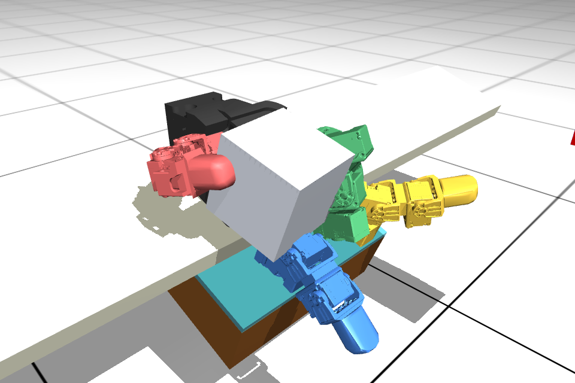
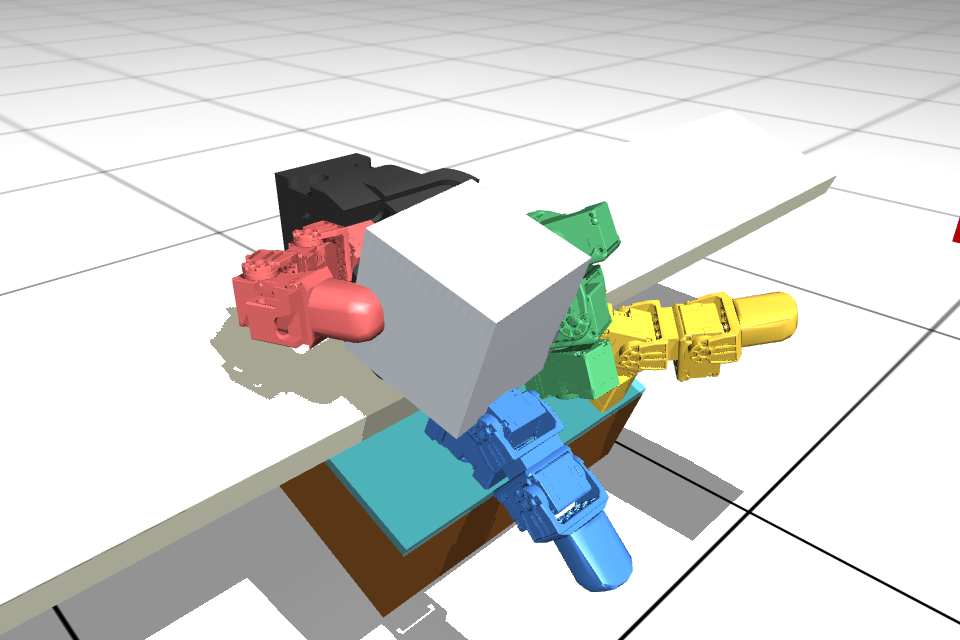
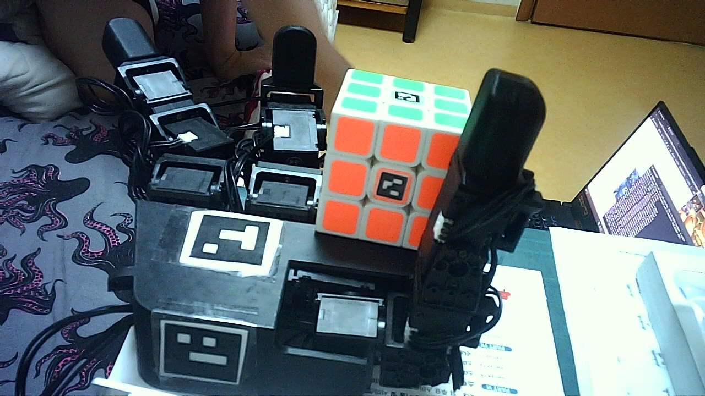
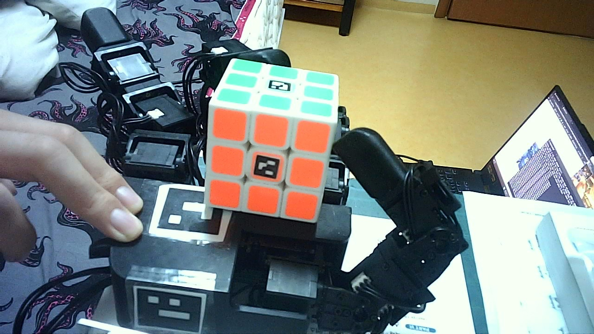
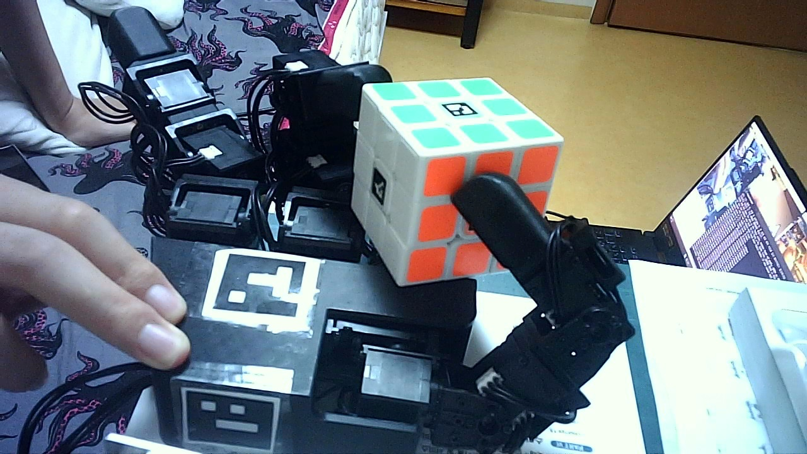
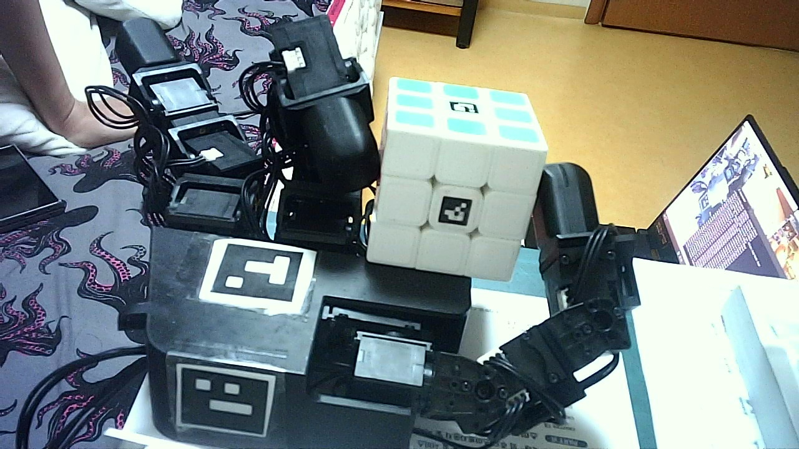
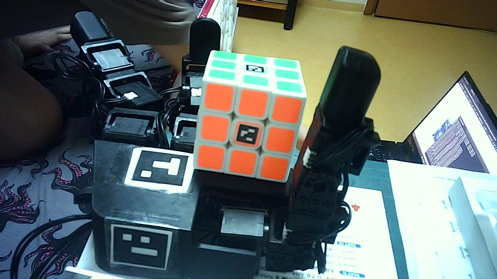
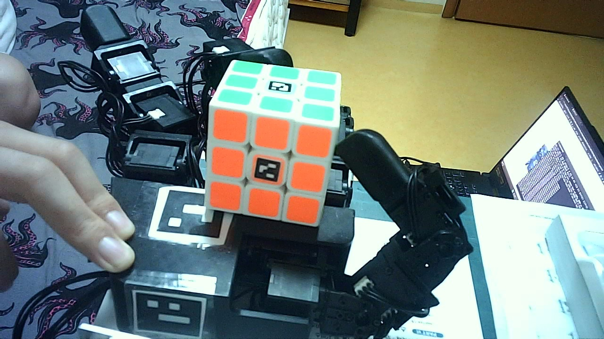
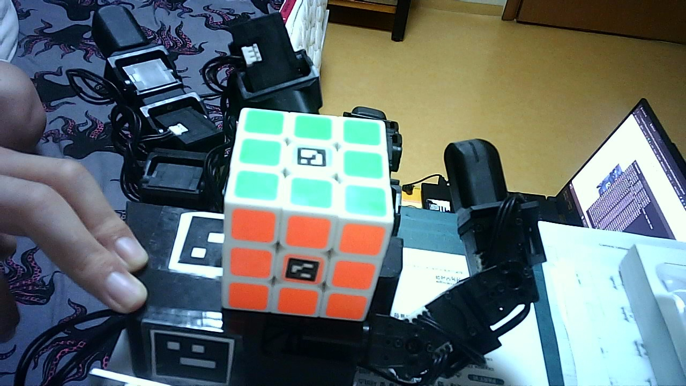

회전 뒤 큐브 몸통을 고정하기
현재 같은 실행의 재시도를 권하지 않음.
네 번 모두 같은 실패가 아니다. 완료된 지령에서도 큐브의 결과가 달라졌으므로 배치와 접촉에 대한 민감도를 줄여야 한다. 마지막 실행의 토크 OFF와 빈손 사진은 확인했다.
연결할 동작
오른손으로 방향 변경→아래쪽을 다시 잡아 몸통 고정→왼손으로 위쪽 레이어 회전→다음 방향 변경과 고정
우선 오른손의 회전과 고정을 해결한다. 관절 지령을 같은 값으로 유지하는 것과 실제 큐브가 고정되는 것은 별도로 확인한다.
현재 모델에서 찾은 문제
기존 파지의 엄지 접촉이 윗단 높이에 있다. 이 상태로 쥐는 힘만 높이면 윗단 회전을 방해할 수 있다. 새 후보는 회전 뒤 접촉을 잠시 풀고 엄지를 아래로 옮겨 다시 잡는다. 모델에서는 약 16mm 낮추는 형상을 찾았으며 기준 배치에서 자유물체 동역학과 고정을 확인했지만, 배치 오차와 놓기 단계에는 보완이 필요하다. 실물에서 같은 접촉이 확인된 것은 아니다.
모터 전류와 PID, 관절 및 충돌 한도는 유지한다. 아직 90도 반복 성공, 외력에 대한 실물 고정, 왼손 레이어 회전 연계가 검증된 것은 아니다.
추가 모델 검사 결과
배치 민감도가 확인됨. 기준 배치에서는 회전 후 하부 재파지와 8초 고정이 마찰과 강성 및 받침 위치 27조건에서 통과했다. 하지만 초기 위치를 한쪽으로 5mm 옮긴 조건에서는 약 62도였던 회전이 약 10도로 줄었고 두 손끝의 접촉이 없어 고정에 실패했다. 이 결과는 실물의 정확한 위치 오차를 측정한 것은 아니며, 사용자의 배치만 원인이라고 확정할 수 없다.
새 후보는 엄지의 설계 접촉점을 16mm, 중지는 4mm 낮춰 큐브 아래쪽을 잡는다. 명목 모델의 고정 시험에서 ±0.01N·m 설계 토크를 가했을 때 최대 각도 변화는 약 0.31도였다. 이 토크는 실제 상단 레이어의 회전 부하를 측정한 값이 아니다. 실제 파지력과 90도 반복 회전은 미검증이다.
놓기 단계는 아직 완료되지 않음. 일반 OPEN은 명목 모델에서 약 13도 되비틀림을 만들었다. 접촉을 먼저 푸는 새 후보는 약 1.7도로 줄었지만 잔여 접촉이 남았다. 따라서 새 실물 실행은 아직 제공하지 않는다. 상단 작업 중에는 오른손의 고정 상태를 유지하고, 작업이 끝난 뒤 놓기를 별도 단계로 처리할 예정이다.

회전 직후 명목 모델. 빨강은 엄지, 초록은 중지.
엄지와 중지를 낮춰 다시 잡은 실제 시뮬레이션 상태.회색 큐브는 형상만 보여주는 접촉 모델이다. 이 그림의 색으로 실물 배치 방향을 정하지 않는다. 실물 기준은 여전히 초록 위, 주황 손목 ID41 쪽이며 아래의 성공한 실물 사진을 참고한다. 렌더링 색만 변경했고 물리 형상과 힘 및 PID는 유지했다.
현재 단계: 연결 확인 후 현재 관절값 읽기 → 성공 배치 기준으로 위치 안내 보완 → 회전 전 접촉 확인 → 회전과 하부 고정 및 명시적 놓기의 실물 시험 준비.
이번 네 번의 실제 기록
05:21
회전 중 취소됨. 끝까지 수행한 회전 결과로 평가하지 않음.

배치 직후
잡은 뒤05:25
빈손 복귀 모델 검사에서 중단. 실제 동작과 배치 시험은 시작하지 않음.
05:26
회전 구간은 완료. 사진에서 주황 앞면이 흰 앞면으로 바뀜. 이후 OPEN 중 취소됨. 정확한 각도는 미확정.
 배치 직후
배치 직후
잡은 뒤
회전 뒤05:31
전체 지령은 완료. 큐브가 이동하고 기울어졌으며 주황 앞면이 남음. 영상 격자 추정 회전은 약 6.7도.

배치 직후
잡은 뒤
회전 뒤실물 사진은 저장 원본이다. 약 6.7도는 가시 격자로 얻은 카메라 기준 추정치이며 로봇 좌표계 등록이나 정밀 각도 인증을 뜻하지 않는다. 새 실물 실행 명령은 아직 제공하지 않는다.